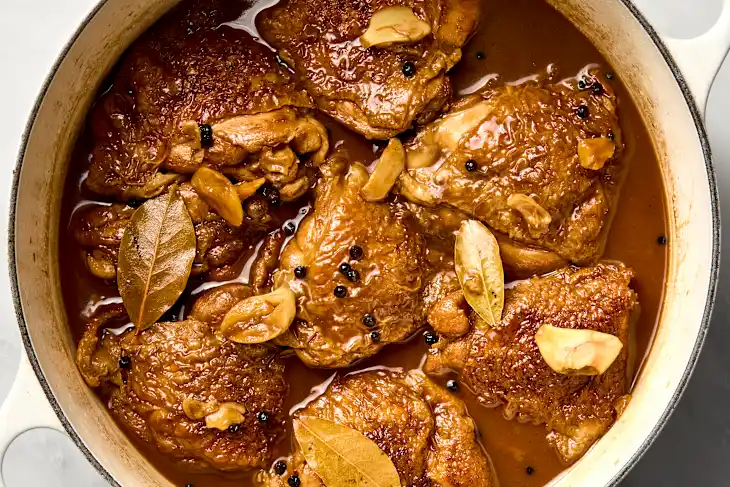

Home
Filipino Chicken Adobo

Description
Adobo, the national dish of the Philippines, on a weekly basis. Sometimes it had chicken, other times it had pork.
This recipe for Filipino adobo is salty, vinegary, and incredibly easy to make.
Ingredients
- Chicken: You can make Filipino adobo with chicken drumsticks, bone-in thighs, or a combination of both.
- Seasoning: 5 cloves of garlic, bay leaves, and whole black peppercorns form the base, and you can easily adjust the amounts to taste.
- Soy sauce: A thin, dark Filipino brand like Silver Swan gives this "Adobong Itim" (black adobo) its classic color and familiar home-style taste.
- Vinegar: Cane vinegar, made from fermented sugarcane syrup, is the most common Philippine choice and provides a mild flavor that balances the dish.